一、虚拟机添加硬盘步骤
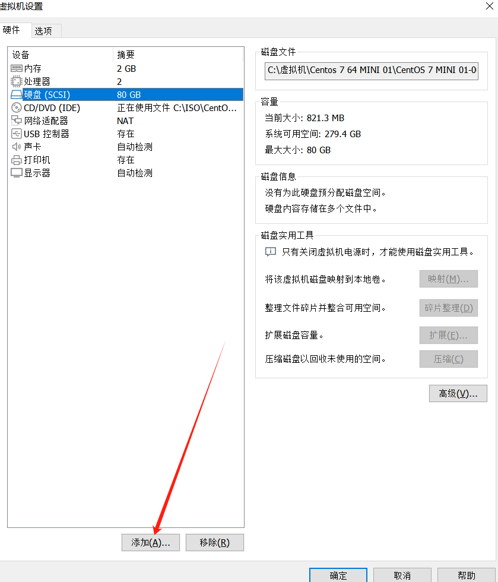
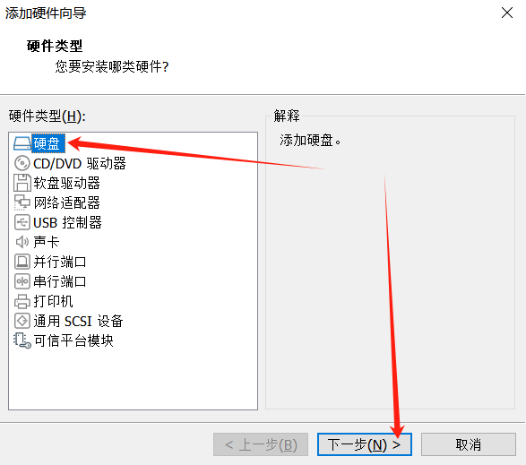
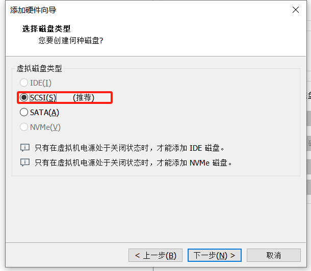
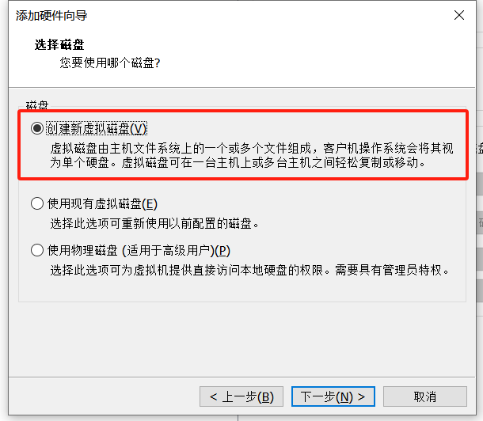
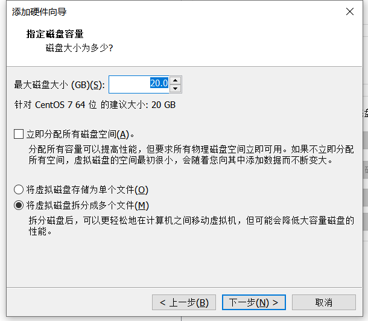
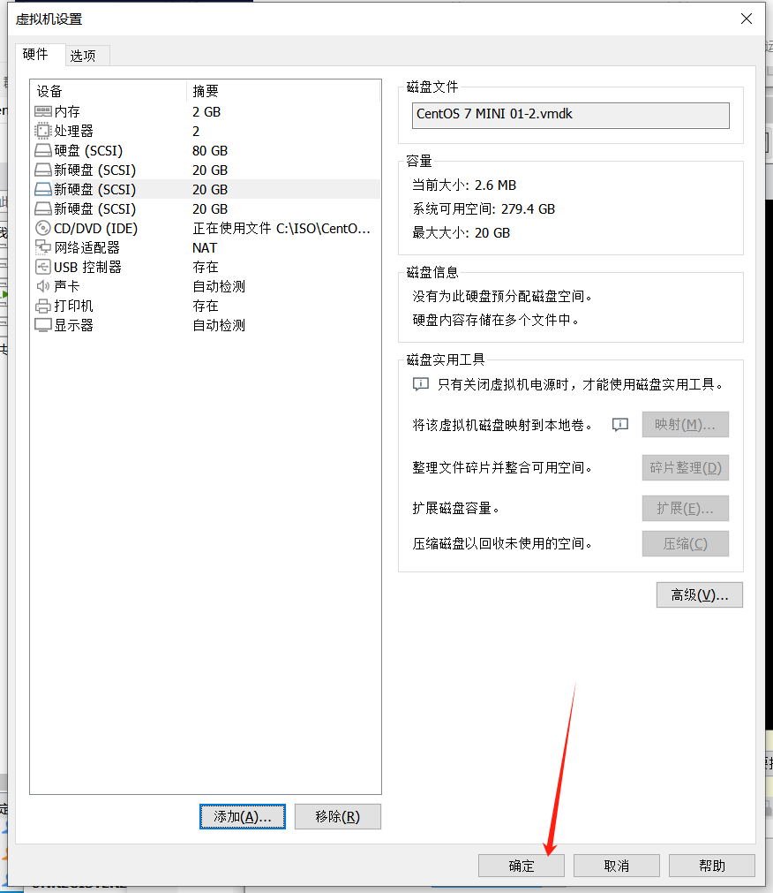
添加磁盘后，重启虚拟机让系统可以识别到磁盘
查询磁盘分区
[root@localhost ~]# fdisk -l
磁盘 /dev/sda：85.9 GB, 85899345920 字节，167772160 个扇区
Units = 扇区 of 1 * 512 = 512 bytes
扇区大小(逻辑/物理)：512 字节 / 512 字节
I/O 大小(最小/最佳)：512 字节 / 512 字节
磁盘标签类型：dos
磁盘标识符：0x000a4e39
设备 Boot Start End Blocks Id System
/dev/sda1 * 2048 2099199 1048576 83 Linux
/dev/sda2 2099200 167772159 82836480 8e Linux LV M
磁盘 /dev/sdb：21.5 GB, 21474836480 字节，41943040 个扇区
Units = 扇区 of 1 * 512 = 512 bytes
扇区大小(逻辑/物理)：512 字节 / 512 字节
I/O 大小(最小/最佳)：512 字节 / 512 字节
磁盘 /dev/sdc：21.5 GB, 21474836480 字节，41943040 个扇区
Units = 扇区 of 1 * 512 = 512 bytes
扇区大小(逻辑/物理)：512 字节 / 512 字节
I/O 大小(最小/最佳)：512 字节 / 512 字节
磁盘 /dev/sdd：21.5 GB, 21474836480 字节，41943040 个扇区
Units = 扇区 of 1 * 512 = 512 bytes
扇区大小(逻辑/物理)：512 字节 / 512 字节
I/O 大小(最小/最佳)：512 字节 / 512 字节
磁盘 /dev/mapper/centos-root：53.7 GB, 53687091200 字节，1048576 00 个扇区
Units = 扇区 of 1 * 512 = 512 bytes
扇区大小(逻辑/物理)：512 字节 / 512 字节
I/O 大小(最小/最佳)：512 字节 / 512 字节
磁盘 /dev/mapper/centos-swap：2147 MB, 2147483648 字节，4194304 个扇区
Units = 扇区 of 1 * 512 = 512 bytes
扇区大小(逻辑/物理)：512 字节 / 512 字节
I/O 大小(最小/最佳)：512 字节 / 512 字节
磁盘 /dev/mapper/centos-home：29.0 GB, 28982640640 字节，5660672 0 个扇区
Units = 扇区 of 1 * 512 = 512 bytes
扇区大小(逻辑/物理)：512 字节 / 512 字节
I/O 大小(最小/最佳)：512 字节 / 512 字节
二、 磁盘介绍
2.1 什么是磁盘
硬盘是电脑永久存储数据的硬件：文件、视频、音频等等
每个硬盘中心都是一摞告诉运转的圆盘，在圆盘上附着一圈金属颗粒，每个金属颗粒都会有自己的磁化程度，主要存储0和1
2.2 磁盘物理结构
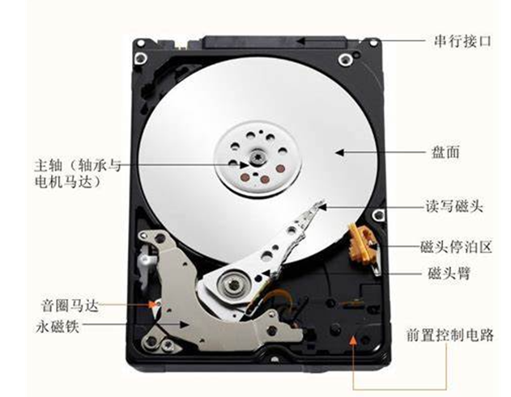
2.2.1 什么盘片
硬盘一般是由一个或者多个盘片组成的，每个盘片都是可以有两面，打开一个盘片正面0面，背面1面后面盘片以此类推
2.2.2 磁道
盘片在出厂的时候被划分了多个不同直径圆环，数据就存储在这样圆环，圆环又被称为磁道（track）
2.2.3 扇区
硬盘出厂的时候修磁盘进行磁道划分，划分成若干个弧段，每个弧段都被称为扇区，扇区也是硬盘上的物理存储单位，每个扇区可以存储512字节
2.2.4 柱面
柱面是抽象的逻辑上的概念，简单说：出于同一个垂直一个取悦的磁道被称为柱面。
作用：主要为了通过算法检测磁头的寻磁时间
2.2.5 磁头
读取磁盘上金属颗粒，主要负责读取或者写入数据
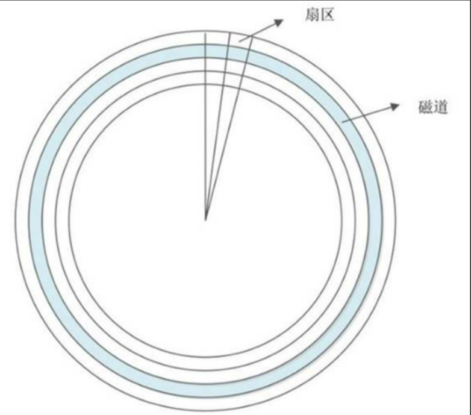
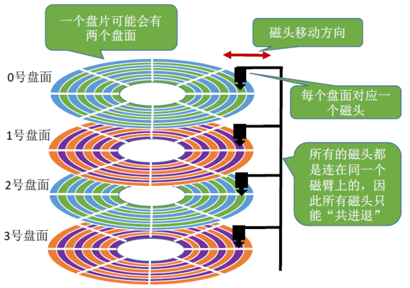
2.3 磁盘的接口类型
2.3.1 IDE-SCSI
比较旧的硬盘接口
2.3.2 SATA-SAS
2.3.3 MSATA-M2
三、磁盘命名
3.1 真是物理机（虚拟机）
-
/dev/sda 第一块磁盘
-
/dev/sda1 第一块磁盘的第一个分区
-
/dev/sdc3 第三块磁盘的第三个分区
-
/dev/sdc5 第三块磁盘的第一个逻辑分区
3.2 虚拟服务器
-
阿里云主机或者KVM虚拟化主机
-
/dev/vda 第一块虚拟磁盘
-
/dev/vda1 第一块虚拟磁盘第一个分区
四、 分区管理
4.1 为什么要分区
Linux系统初始化的时候，跟MBR识别硬盘设备
MBR:硬盘主引导记录，占据磁盘的0磁道的第一个扇区
MBR表内：用来载入操作系统的可执行代码，引导代码用来告诉计算机如何处理分区表，如何定位操作系统等等；分区用来管理硬盘的分区情况，是一个有效的引导记录扇区
-
MBR占据0磁道的第一个扇区，占据了512字节
-
第一部分：预启动区：占用446字节
-
第二部分：分区表，占用64字节
-
第三部分：幻数 占用2字节，固定55AA
-
常见的分区号
-
0x5 可扩占分区
-
0x82 Linux交换分区
-
0x83 普通Linux分区
-
0x8e Linux逻辑卷管理分区
-
0xfd Linux的raid分区
为什么要创建分区
-
方便管理和控制
-
提高系统的效率
-
分区后减少系统读写和磁盘的磁头移动距离
-
使用磁盘的分配额的功能区限制用户使用的
-
磁盘容量
-
便于恢复和备份
五、 磁盘分区
5.1 磁盘分区命令 fdisk
[root@localhost ~]# fdisk -l
磁盘 /dev/sda：85.9 GB, 85899345920 字节，167772160 个扇区
Units = 扇区 of 1 * 512 = 512 bytes
扇区大小(逻辑/物理)：512 字节 / 512 字节
I/O 大小(最小/最佳)：512 字节 / 512 字节
磁盘标签类型：dos
磁盘标识符：0x000a4e39
设备 Boot Start End Blocks Id System
/dev/sda1 * 2048 2099199 1048576 83 Linux
/dev/sda2 2099200 167772159 82836480 8e Linux LV M
5.2 fdisk分区
MBR内有一个占用64字节的分区表：保存的是分区表信息
由于每一个分区会占用16个字节，最多可以做4个分区（四个主分区）
为了解决分区不足的，就可以将分区表的16个字节存储另外一个信息（扩展分区）
总结：硬盘的分区分为三种：主分区、扩展分区、逻辑分区
-
对于一个硬盘来说，分区方案
-
它最少是有一个主分区，最多时有4个主分区
-
三个主分区+一个扩展分区+若干逻辑分区
-
一个主分区+一个扩展分区和若干逻辑分区
- 不管前面有多少个主分区或扩展分区，逻辑分区永远是从5开始的
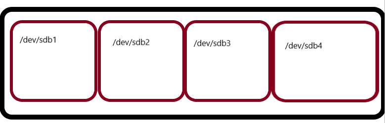
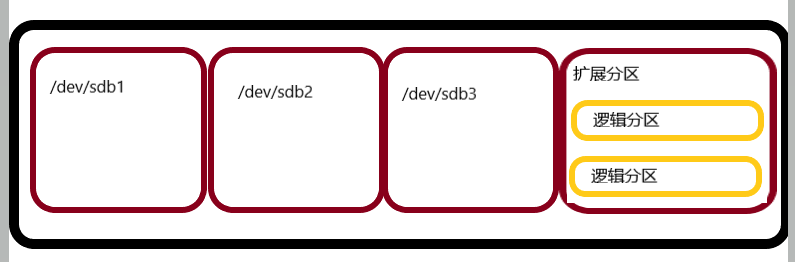
分区
[root@localhost ~]# fdisk /dev/sdb
欢迎使用 fdisk (util-linux 2.23.2)。
更改将停留在内存中，直到您决定将更改写入磁盘。
使用写入命令前请三思。
Device does not contain a recognized partition table
使用磁盘标识符 0xebc8aaa6 创建新的 DOS 磁盘标签。
命令(输入 m 获取帮助)：p #打印分区列表
磁盘 /dev/sdb：21.5 GB, 21474836480 字节，41943040 个扇区
Units = 扇区 of 1 * 512 = 512 bytes
扇区大小(逻辑/物理)：512 字节 / 512 字节
I/O 大小(最小/最佳)：512 字节 / 512 字节
磁盘标签类型：dos
磁盘标识符：0xebc8aaa6
设备 Boot Start End Blocks Id System
命令(输入 m 获取帮助)：n 新建分区
Partition type:
p primary (0 primary, 0 extended, 4 free)
e extended
Select (default p): p
分区号 (1-4，默认 1)： #分区号
起始 扇区 (2048-41943039，默认为 2048)：
将使用默认值 2048
`设置分区大小：扇区或者大小`
Last 扇区, +扇区 or +size{K,M,G} (2048-41943039，默认为 41943039)：+6G
分区 1 已设置为 Linux 类型，大小设为 6 GiB
命令(输入 m 获取帮助)：w #保存退出
The partition table has been altered!
Calling ioctl() to re-read partition table.
正在同步磁盘。
[root@localhost ~]# fdisk -l
磁盘 /dev/sda：85.9 GB, 85899345920 字节，167772160 个扇区
Units = 扇区 of 1 * 512 = 512 bytes
扇区大小(逻辑/物理)：512 字节 / 512 字节
I/O 大小(最小/最佳)：512 字节 / 512 字节
磁盘标签类型：dos
磁盘标识符：0x000a4e39
设备 Boot Start End Blocks Id System
/dev/sda1 * 2048 2099199 1048576 83 Linux
/dev/sda2 2099200 167772159 82836480 8e Linux LVM
磁盘 /dev/sdb：21.5 GB, 21474836480 字节，41943040 个扇区
Units = 扇区 of 1 * 512 = 512 bytes
扇区大小(逻辑/物理)：512 字节 / 512 字节
I/O 大小(最小/最佳)：512 字节 / 512 字节
磁盘标签类型：dos
磁盘标识符：0xebc8aaa6
设备 Boot Start End Blocks Id System
/dev/sdb1 2048 12584959 6291456 83 Linux
[root@localhost ~]# fdisk /dev/sdb
欢迎使用 fdisk (util-linux 2.23.2)。
更改将停留在内存中，直到您决定将更改写入磁盘。
使用写入命令前请三思。
命令(输入 m 获取帮助)：p
磁盘 /dev/sdb：21.5 GB, 21474836480 字节，41943040 个扇区
Units = 扇区 of 1 * 512 = 512 bytes
扇区大小(逻辑/物理)：512 字节 / 512 字节
I/O 大小(最小/最佳)：512 字节 / 512 字节
磁盘标签类型：dos
磁盘标识符：0xebc8aaa6
设备 Boot Start End Blocks Id System
/dev/sdb1 2048 12584959 6291456 83 Linux
命令(输入 m 获取帮助)：n
Partition type:
p primary (1 primary, 0 extended, 3 free)
e extended
Select (default p): e
分区号 (2-4，默认 2)：3
起始 扇区 (12584960-41943039，默认为 12584960)：
将使用默认值 12584960
Last 扇区, +扇区 or +size{K,M,G} (12584960-41943039，默认为 41943039)：
将使用默认值 41943039
分区 3 已设置为 Extended 类型，大小设为 14 GiB
命令(输入 m 获取帮助)：p
磁盘 /dev/sdb：21.5 GB, 21474836480 字节，41943040 个扇区
Units = 扇区 of 1 * 512 = 512 bytes
扇区大小(逻辑/物理)：512 字节 / 512 字节
I/O 大小(最小/最佳)：512 字节 / 512 字节
磁盘标签类型：dos
磁盘标识符：0xebc8aaa6
设备 Boot Start End Blocks Id System
/dev/sdb1 2048 12584959 6291456 83 Linux
/dev/sdb3 12584960 41943039 14679040 5 Extended
命令(输入 m 获取帮助)：w
The partition table has been altered!
Calling ioctl() to re-read partition table.
正在同步磁盘。
[root@localhost ~]# fdisk /dev/sdb
欢迎使用 fdisk (util-linux 2.23.2)。
更改将停留在内存中，直到您决定将更改写入磁盘。
使用写入命令前请三思。
命令(输入 m 获取帮助)：p
磁盘 /dev/sdb：21.5 GB, 21474836480 字节，41943040 个扇区
Units = 扇区 of 1 * 512 = 512 bytes
扇区大小(逻辑/物理)：512 字节 / 512 字节
I/O 大小(最小/最佳)：512 字节 / 512 字节
磁盘标签类型：dos
磁盘标识符：0xebc8aaa6
设备 Boot Start End Blocks Id System
/dev/sdb1 2048 12584959 6291456 83 Linux
/dev/sdb3 12584960 41943039 14679040 5 Extended
命令(输入 m 获取帮助)：n
Partition type:
p primary (1 primary, 1 extended, 2 free)
l logical (numbered from 5)
Select (default p): l
添加逻辑分区 5
起始 扇区 (12587008-41943039，默认为 12587008)：
将使用默认值 12587008
Last 扇区, +扇区 or +size{K,M,G} (12587008-41943039，默认为 41943039)：+3G
分区 5 已设置为 Linux 类型，大小设为 3 GiB
命令(输入 m 获取帮助)：p
磁盘 /dev/sdb：21.5 GB, 21474836480 字节，41943040 个扇区
Units = 扇区 of 1 * 512 = 512 bytes
扇区大小(逻辑/物理)：512 字节 / 512 字节
I/O 大小(最小/最佳)：512 字节 / 512 字节
磁盘标签类型：dos
磁盘标识符：0xebc8aaa6
设备 Boot Start End Blocks Id System
/dev/sdb1 2048 12584959 6291456 83 Linux
/dev/sdb3 12584960 41943039 14679040 5 Extended
/dev/sdb5 12587008 18878463 3145728 83 Linux
命令(输入 m 获取帮助)：w
The partition table has been altered!
Calling ioctl() to re-read partition table.
正在同步磁盘。
-
fdisk命令参数
-
a 设置可引导标记
-
b 表示bsd磁盘标签
-
c 设置docs操作系统兼容标记
-
d 删除分区
-
l 显示系统类型
-
m 显示帮助菜单
-
n 新建分区
-
p 显示分区列表
-
q 不保存退出
-
s 新建sun磁盘标签
-
t 改变分区的系统ID
-
u 改变显示记录单位
-
w保存退出
-
V 验证分区表
六、文件系统结构
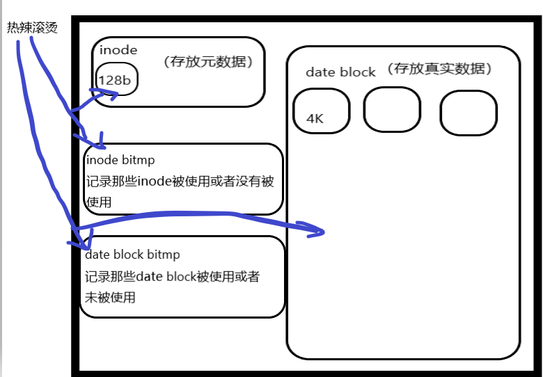
-
文件删除
- 删除目录下文件名称，然后把存储文件的inode和date block改成可被修改的状态，但是文件内容没有删除的，是可以恢复
-
文件移动
- 只是将文件名称从一个目录移动到另一个目录，并不会修改inode和block
6.1 Linux 格式化 mkfs
-
分区之后，不格式写入文件系统，是不能正常使用
-
就需要对磁盘做格式化
[root@localhost ~]# mkfs -t ext4 /dev/sdb1
mke2fs 1.42.9 (28-Dec-2013)
文件系统标签=
OS type: Linux
块大小=4096 (log=2)
分块大小=4096 (log=2)
Stride=0 blocks, Stripe width=0 blocks
393216 inodes, 1572864 blocks
78643 blocks (5.00%) reserved for the super user
第一个数据块=0
Maximum filesystem blocks=1610612736
48 block groups
32768 blocks per group, 32768 fragments per group
8192 inodes per group
Superblock backups stored on blocks:
32768, 98304, 163840, 229376, 294912, 819200, 884736
Allocating group tables: 完成
正在写入inode表: 完成
Creating journal (32768 blocks): 完成
Writing superblocks and filesystem accounting information: 完成
6.2 linux 格式化 mke2fs
- 和mkfs的区别在于：mkfs不能调整block的大小，如果mke2fs是可以调整block大小
mke2fs -t ext4 -b 2048 /dev/sdf3
七、 挂载 mount
[root@localhost ~]# mkdir /guazai
[root@localhost ~]# mount /dev/sdb1 /guazai/ #将/dev/sdb1挂载到/guazai目录
[root@localhost ~]# df -Th #查询挂载情况
文件系统 类型 容量 已用 可用 已用% 挂载点
devtmpfs devtmpfs 898M 0 898M 0% /dev
tmpfs tmpfs 910M 0 910M 0% /dev/shm
tmpfs tmpfs 910M 9.6M 901M 2% /run
tmpfs tmpfs 910M 0 910M 0% /sys/fs/cgroup
/dev/mapper/centos-root xfs 50G 2.0G 49G 4% /
/dev/sda1 xfs 1014M 150M 865M 15% /boot
/dev/mapper/centos-home xfs 27G 33M 27G 1% /home
tmpfs tmpfs 182M 0 182M 0% /run/user/0
/dev/sdb1 ext4 5.8G 24M 5.5G 1% /guazai
[root@localhost ~]# vim /etc/fstab
#末行添加
/dev/sdb1 /guazai ext4 defaults 0 0
八、Linux虚拟内存和物理内存
8.1 虚拟内存设置
[root@localhost ~]# fdisk -l
……
磁盘 /dev/mapper/centos-swap：2147 MB, 2147483648 字节，4194304 个扇区
Units = 扇区 of 1 * 512 = 512 bytes
扇区大小(逻辑/物理)：512 字节 / 512 字节
I/O 大小(最小/最佳)：512 字节 / 512 字节
磁盘 /dev/mapper/centos-home：29.0 GB, 28982640640 字节，56606720 个扇区
Units = 扇区 of 1 * 512 = 512 bytes
扇区大小(逻辑/物理)：512 字节 / 512 字节
I/O 大小(最小/最佳)：512 字节 / 512 字节
8.2 创建虚拟内存
命令(输入 m 获取帮助)：p
磁盘 /dev/sdb：21.5 GB, 21474836480 字节，41943040 个扇区
Units = 扇区 of 1 * 512 = 512 bytes
扇区大小(逻辑/物理)：512 字节 / 512 字节
I/O 大小(最小/最佳)：512 字节 / 512 字节
磁盘标签类型：dos
磁盘标识符：0xebc8aaa6
设备 Boot Start End Blocks Id System
/dev/sdb1 2048 12584959 6291456 83 Linux
/dev/sdb3 12584960 41943039 14679040 5 Extended
/dev/sdb5 12587008 16781311 2097152 83 Linux
命令(输入 m 获取帮助)：t 修改ID
分区号 (1,3,5，默认 5)：5 选择要修改的分区
Hex 代码(输入 L 列出所有代码)：82 指定修改的分区代码
已将分区“Linux”的类型更改为“Linux swap / Solaris”
命令(输入 m 获取帮助)：p
磁盘 /dev/sdb：21.5 GB, 21474836480 字节，41943040 个扇区
Units = 扇区 of 1 * 512 = 512 bytes
扇区大小(逻辑/物理)：512 字节 / 512 字节
I/O 大小(最小/最佳)：512 字节 / 512 字节
磁盘标签类型：dos
磁盘标识符：0xebc8aaa6
设备 Boot Start End Blocks Id System
/dev/sdb1 2048 12584959 6291456 83 Linux
/dev/sdb3 12584960 41943039 14679040 5 Extended
/dev/sdb5 12587008 16781311 2097152 82 Linux swap / Solaris
[root@localhost ~]# mkswap /dev/sdb5
mkswap: /dev/sdb5: warning: wiping old ext4 signature.
正在设置交换空间版本 1，大小 = 2097148 KiB
无标签，UUID=1618b389-dd94-495f-b32d-c20e69b76ec0
[root@localhost ~]# free
total used free shared buff/cache available
Mem: 1863028 178056 1495444 9792 189528 1532072
Swap: 2097148 0 2097148
- 使用swapon命令将新建的swap分区加入到系统虚拟内存
[root@localhost ~]# swapon /dev/sdb5
[root@localhost ~]# free
total used free shared buff/cache available
Mem: 1863028 179324 1494172 9792 189532 1530804
Swap: 4194296 0 4194296
九、Linux逻辑卷管理机制（LVM）
-
虽然有扩展硬盘的机制，经过分区、格式化之后，可以无限扩容，
-
如果在一开始就有管理机制帮助动态的管理存储，LVM提高这种功能，
-
LVM最大的好处：可以随时调整分区的大小，分区内的时候不会对视，而且不需要卸载分区、停止服务等等
9.1 LVM的概念
LVM（逻辑卷管理机制）：在硬盘分区上建立一个逻辑层，这个逻辑层让多个硬盘或者多个分区看起来像是一个硬盘
-
真实的硬盘分区被称为物理卷（PV）
-
由多个物理卷（PV）组成的逻辑上的硬盘，叫做卷组（VG）
-
可以使用同一个硬盘的不同分区
-
也可以是在不同硬盘的不同分区
-
最后显示的一个逻辑硬盘
-
把卷组划分成多个可以使用的分区，就叫逻辑卷（LV）
- 卷组一个逻辑上的硬盘，需要使用一定要分区，分区就是LV
-
在LVM最小存储单位不在block，是物理扩展（PE）
PE是最小存储单位，大小是4MB
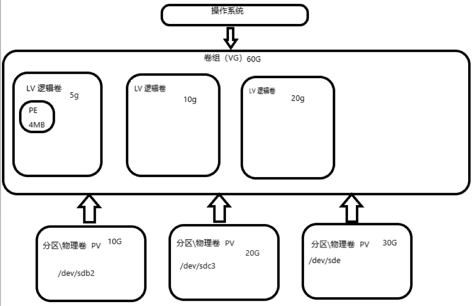
9.2 PV物理卷管理操作
9.2.1 创建8e的物理分区
- 教师机将sdb剩余的空间创建sdb6，并且修改ID为8e
[root@localhost ~]# fdisk /dev/sdb
`创建分区`
命令(输入 m 获取帮助)：n
Partition type:
p primary (1 primary, 1 extended, 2 free)
l logical (numbered from 5)
Select (default p): l
添加逻辑分区 6
起始 扇区 (16783360-41943039，默认为 16783360)：
将使用默认值 16783360
Last 扇区, +扇区 or +size{K,M,G} (16783360-41943039，默认为 41943039)：
将使用默认值 41943039
分区 6 已设置为 Linux 类型，大小设为 12 GiB
命令(输入 m 获取帮助)：p
磁盘 /dev/sdb：21.5 GB, 21474836480 字节，41943040 个扇区
Units = 扇区 of 1 * 512 = 512 bytes
扇区大小(逻辑/物理)：512 字节 / 512 字节
I/O 大小(最小/最佳)：512 字节 / 512 字节
磁盘标签类型：dos
磁盘标识符：0xebc8aaa6
设备 Boot Start End Blocks Id System
/dev/sdb1 2048 12584959 6291456 83 Linux
/dev/sdb3 12584960 41943039 14679040 5 Extended
/dev/sdb5 12587008 16781311 2097152 82 Linux swap / Solaris
/dev/sdb6 16783360 41943039 12579840 83 Linux
`更改分区ID`
命令(输入 m 获取帮助)：t
分区号 (1,3,5,6，默认 6)：6
Hex 代码(输入 L 列出所有代码)：8e
已将分区“Linux”的类型更改为“Linux LVM”
命令(输入 m 获取帮助)：p
磁盘 /dev/sdb：21.5 GB, 21474836480 字节，41943040 个扇区
Units = 扇区 of 1 * 512 = 512 bytes
扇区大小(逻辑/物理)：512 字节 / 512 字节
I/O 大小(最小/最佳)：512 字节 / 512 字节
磁盘标签类型：dos
磁盘标识符：0xebc8aaa6
设备 Boot Start End Blocks Id System
/dev/sdb1 2048 12584959 6291456 83 Linux
/dev/sdb3 12584960 41943039 14679040 5 Extended
/dev/sdb5 12587008 16781311 2097152 82 Linux swap / Solaris
/dev/sdb6 16783360 41943039 12579840 8e Linux LVM
`保存退出`
命令(输入 m 获取帮助)：w
准备好了3个物理分区/dev/sdb6 /dev/sdc1 /dev/sdc2
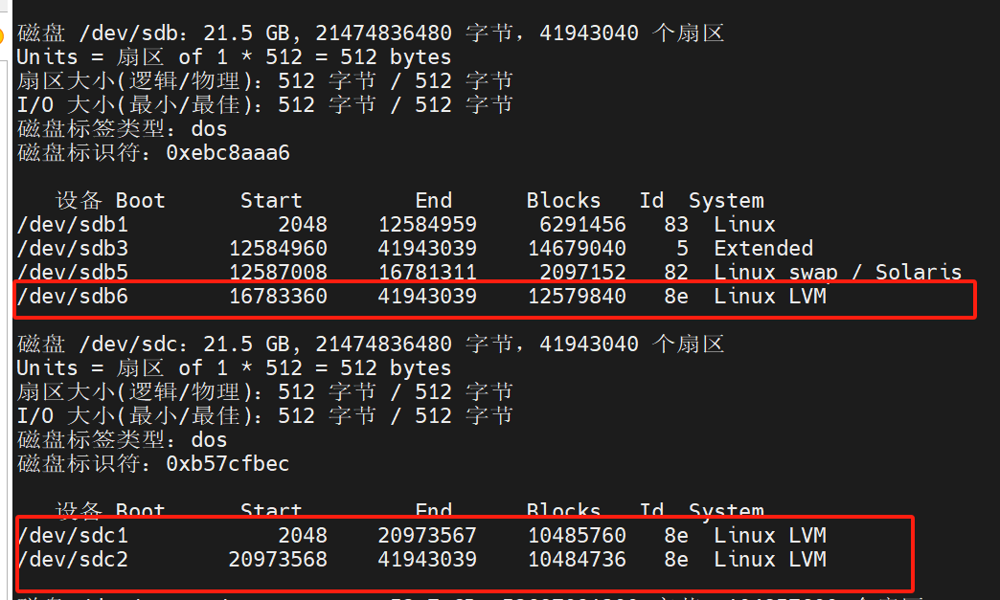
9.2.2 创建PV
[root@localhost ~]# pvcreate /dev/sdb6
Physical volume "/dev/sdb6" successfully created
[root@localhost ~]# pvcreate /dev/sdc1
Physical volume "/dev/sdc1" successfully created
[root@localhost ~]# pvcreate /dev/sdc2
Physical volume "/dev/sdc2" successfully created.
[root@localhost ~]# pvscan
PV /dev/sda2 VG centos lvm2 [<79.00 GiB / 4.00 MiB free]
PV /dev/sdc1 lvm2 [10.00 GiB]
PV /dev/sdb6 lvm2 [<12.00 GiB]
PV /dev/sdc2 lvm2 [<10.00 GiB]
Total: 4 [110.99 GiB] / in use: 1 [<79.00 GiB] / in no VG: 3 [<32.00 GiB]
查询详细信息
[root@localhost ~]# pvdisplay
--- Physical volume ---
PV Name /dev/sda2
VG Name centos
PV Size <79.00 GiB / not usable 3.00 MiB
Allocatable yes
PE Size 4.00 MiB
Total PE 20223
Free PE 1
Allocated PE 20222
PV UUID ysdZdh-4pPV-ctmE-rHe5-sLmE-ftcI-unC3Fc
"/dev/sdc1" is a new physical volume of "10.00 GiB"
--- NEW Physical volume ---
PV Name /dev/sdc1
VG Name
PV Size 10.00 GiB
Allocatable NO
PE Size 0
Total PE 0
Free PE 0
Allocated PE 0
PV UUID TutwKI-Ixli-fc6B-U1cP-361n-PDk1-RtURDc
"/dev/sdb6" is a new physical volume of "<12.00 GiB"
--- NEW Physical volume ---
PV Name /dev/sdb6
VG Name
PV Size <12.00 GiB
Allocatable NO
PE Size 0
Total PE 0
Free PE 0
Allocated PE 0
PV UUID L5DjBK-oS7Q-Vn8Y-Gdpg-2egs-fNXD-DvIghZ
"/dev/sdc2" is a new physical volume of "<10.00 GiB"
--- NEW Physical volume ---
PV Name /dev/sdc2
VG Name
PV Size <10.00 GiB
Allocatable NO
PE Size 0
Total PE 0
Free PE 0
Allocated PE 0
PV UUID e4Cmhg-b8Gk-qs0D-4Jdz-q4e7-OJva-DP3G5z
[root@localhost ~]# pvremove /dev/sdc2
Labels on physical volume "/dev/sdc2" successfully wiped.
[root@localhost ~]# pvscan
PV /dev/sda2 VG centos lvm2 [<79.00 GiB / 4.00 MiB free]
PV /dev/sdc1 lvm2 [10.00 GiB]
PV /dev/sdb6 lvm2 [<12.00 GiB]
Total: 3 [100.99 GiB] / in use: 1 [<79.00 GiB] / in no VG: 2 [<22.00 GiB]
[root@localhost ~]# pvcreate /dev/sdc2
9.3 卷组的操作
9.3.1 创建卷组
[root@localhost ~]# vgcreate scvg /dev/sdb6 /dev/sdc1 /dev/sdc2
Volume group "scvg" successfully created
[root@localhost ~]# vgchange -a y scvg
0 logical volume(s) in volume group "scvg" now active
[root@localhost ~]# vgdisplay
--- Volume group ---
……
--- Volume group ---
VG Name scvg
System ID
Format lvm2
Metadata Areas 3
Metadata Sequence No 1
VG Access read/write
VG Status resizable
MAX LV 0
Cur LV 0
Open LV 0
Max PV 0
Cur PV 3
Act PV 3
VG Size <31.99 GiB
PE Size 4.00 MiB
Total PE 8189
Alloc PE / Size 0 / 0
Free PE / Size 8189 / <31.99 GiB
VG UUID 1VhCJe-YTli-3Sno-MSDi-k6Fc-2GXi-1xh0c7
[root@localhost ~]# vgreduce scvg /dev/sdc2
Removed "/dev/sdc2" from volume group "scvg"
[root@localhost ~]# vgextend scvg /dev/sdc2
Volume group "scvg" successfully extended
vgremove scvg
9.4 逻辑卷操作
9.4.1 创建逻辑卷
[root@localhost ~]# lvcreate -L 5G -n whlv scvg
Logical volume "whlv" created.
[root@localhost ~]# lvdisplay
……
--- Logical volume ---
LV Path /dev/scvg/whlv
LV Name whlv
VG Name scvg
LV UUID IYLxxc-ExAQ-sf20-m3fe-CfVS-0kEf-tQ9fex
LV Write Access read/write
LV Creation host, time localhost.localdomain, 2024-03-14 15:25:07 +0800
LV Status available
# open 0
LV Size 5.00 GiB
Current LE 1280
Segments 1
Allocation inherit
Read ahead sectors auto
- currently set to 8192
Block device 253:3
[root@localhost ~]# mkfs -t ext4 /dev/scvg/whlv
mke2fs 1.42.9 (28-Dec-2013)
文件系统标签=
OS type: Linux
块大小=4096 (log=2)
分块大小=4096 (log=2)
Stride=0 blocks, Stripe width=0 blocks
327680 inodes, 1310720 blocks
65536 blocks (5.00%) reserved for the super user
第一个数据块=0
Maximum filesystem blocks=1342177280
40 block groups
32768 blocks per group, 32768 fragments per group
8192 inodes per group
Superblock backups stored on blocks:
32768, 98304, 163840, 229376, 294912, 819200, 884736
Allocating group tables: 完成
正在写入inode表: 完成
Creating journal (32768 blocks): 完成
Writing superblocks and filesystem accounting information: 完成
[root@localhost ~]# mkdir /opt/lv
[root@localhost ~]# mount /dev/scvg/whlv /opt/lv/
[root@localhost ~]# df -Th
文件系统 类型 容量 已用 可用 已用% 挂载点
devtmpfs devtmpfs 898M 0 898M 0% /dev
tmpfs tmpfs 910M 0 910M 0% /dev/shm
tmpfs tmpfs 910M 9.6M 901M 2% /run
tmpfs tmpfs 910M 0 910M 0% /sys/fs/cgroup
/dev/mapper/centos-root xfs 50G 2.0G 49G 4% /
/dev/sda1 xfs 1014M 150M 865M 15% /boot
/dev/mapper/centos-home xfs 27G 33M 27G 1% /home
tmpfs tmpfs 182M 0 182M 0% /run/user/0
/dev/mapper/scvg-whlv ext4 4.8G 20M 4.6G 1% /opt/lv
`将whlv的大小设置成10G`
[root@localhost ~]# lvresize -L 10G /dev/scvg/whlv
Size of logical volume scvg/whlv changed from 5.00 GiB (1280 extents) to 10.00 GiB (2560 extents).
Logical volume scvg/whlv successfully resized.
`扩容之后，查询还是5G左右`
[root@localhost ~]# df -h /opt/lv/
文件系统 容量 已用 可用 已用% 挂载点
/dev/mapper/scvg-whlv 4.8G 20M 4.6G 1% /opt/lv
`同步LV和挂载点`
[root@localhost ~]# resize2fs /dev/scvg/whlv
resize2fs 1.42.9 (28-Dec-2013)
Filesystem at /dev/scvg/whlv is mounted on /opt/lv; on-line resizing required
old_desc_blocks = 1, new_desc_blocks = 2
The filesystem on /dev/scvg/whlv is now 2621440 blocks long.
`再次查询`
[root@localhost ~]# df -h /opt/lv/
文件系统 容量 已用 可用 已用% 挂载点
/dev/mapper/scvg-whlv 9.8G 23M 9.3G 1% /opt/lv
umount /opt/lv
e2fsck -fy /dev/scvg/whlv #检查超级块等等
resize2fs /dev/scvg/whlv 5G #同步文件系统
lvreduce -L 5G /dev/scvg/whlv #缩容为5G
resize2fs /dev/scvg/whlv 5G #同步文件系统
[root@localhost ~]# mount /dev/scvg/whlv /opt/lv/
[root@localhost ~]# echo "111" >>/opt/lv/1.txt
lvremove /dev/scvg/whlv
十、RAID
10.1 RAID 是什么
RAID（磁盘阵列）：廉价由多个磁盘组成磁盘阵列。
10.2 RAID级别
10.2.1 RAID 0
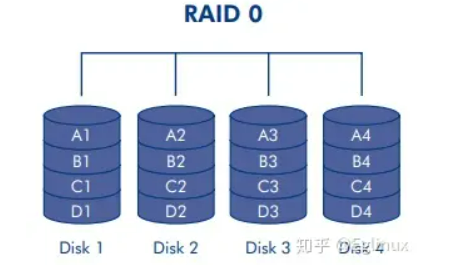
10.2.2 RAID 1
10.2.3 RAID5
RAID 6 RAID1+0 RAID0+1
10.2.4 软RAID和硬RAID区别
10.3 RAID 5 实战搭建
1. 安装mdadm
[root@localhost ~]# yum -y install mdadm
-
mdadm 磁盘阵列命令
-
选项
-
创建模式
-
-C 创建阵列
-
-l 指定级别
-
-n 自定义设备数量
-
-v 指定设备名称
-
-x 指定备用磁盘
-
管理模式
-
--add 添加磁盘
-
--remove 移除磁盘
-
-fail 模拟磁盘故障
案例磁盘分配：
/dev/sdb /dev/sdc /dev/sdd /dev/sde
sdb sdc sdd 做raid5
sde 备用磁盘
2、使用mdadm创建磁盘阵列
[root@localhost ~]#
mdadm -C -v /dev/md5 -l 5 -n 3 /dev/sdb /dev/sdc /dev/sdd -x 1 /dev/sde
mdadm: layout defaults to left-symmetric
mdadm: layout defaults to left-symmetric
mdadm: chunk size defaults to 512K
mdadm: size set to 20954112K
mdadm: Defaulting to version 1.2 metadata
mdadm: array /dev/md5 started.
3. 查询当前正在活跃的磁盘阵列
[root@localhost ~]# mdadm -D /dev/md5
/dev/md5:
Version : 1.2
Creation Time : Mon Mar 18 14:16:21 2024
Raid Level : raid5
Array Size : 41908224 (39.97 GiB 42.91 GB)
Used Dev Size : 20954112 (19.98 GiB 21.46 GB)
Raid Devices : 3
Total Devices : 4
Persistence : Superblock is persistent
Update Time : Mon Mar 18 14:17:47 2024
State : clean, degraded, recovering
Active Devices : 2
Working Devices : 4
Failed Devices : 0
Spare Devices : 2
Layout : left-symmetric
Chunk Size : 512K
Consistency Policy : resync
Rebuild Status : 86% complete
Name : localhost.localdomain:5 (local to host localhost.localdomain)
UUID : 584f652a:64488a8f:2adbafee:d86deeed
Events : 14
Number Major Minor RaidDevice State
0 8 16 0 active sync /dev/sdb
1 8 32 1 active sync /dev/sdc
4 8 48 2 spare rebuilding /dev/sdd
3 8 64 - spare /dev/sde
4. 格式化
[root@localhost ~]# mkfs -t xfs -f /dev/md5
或者 mkfs.xfs -f /dev/md5
5. 创建挂载点，挂载使用
[root@localhost ~]# mkdir /raid5
[root@localhost ~]# mount /dev/m
mapper/ mcelog md5 mem midi mqueue/
[root@localhost ~]# mount /dev/md5 /raid5/
[root@localhost ~]# echo "11111" > /raid5/1
[root@localhost ~]# cat /raid5/1
11111
6. 模拟损坏
[root@localhost ~]# mdadm /dev/md5 --fail /dev/sdc
mdadm: set /dev/sdc faulty in /dev/md5
[root@localhost ~]# cat /raid5/1
11111
[root@localhost ~]# mdadm -D /dev/md5
/dev/md5:
Version : 1.2
Creation Time : Mon Mar 18 14:16:21 2024
Raid Level : raid5
Array Size : 41908224 (39.97 GiB 42.91 GB)
Used Dev Size : 20954112 (19.98 GiB 21.46 GB)
Raid Devices : 3
Total Devices : 4
Persistence : Superblock is persistent
Update Time : Mon Mar 18 14:50:25 2024
State : clean, degraded, recovering
Active Devices : 2
Working Devices : 3
Failed Devices : 1
Spare Devices : 1
Layout : left-symmetric
Chunk Size : 512K
Consistency Policy : resync
Rebuild Status : 42% complete
Name : localhost.localdomain:5 (local to host localhost.localdomain)
UUID : 584f652a:64488a8f:2adbafee:d86deeed
Events : 26
Number Major Minor RaidDevice State
0 8 16 0 active sync /dev/sdb
3 8 64 1 spare rebuilding /dev/sde
4 8 48 2 active sync /dev/sdd
1 8 32 - faulty /dev/sdc
7.移除磁盘、添加磁盘
[root@localhost ~]# mdadm /dev/md5 --remove /dev/sdc
mdadm: hot removed /dev/sdc from /dev/md5
[root@localhost ~]# mdadm /dev/md5 --add /dev/sdc
mdadm: added /dev/sdc
8、raid 永久生效
#输出相应设备到配置文件内，配置文件本身是不存在的
[root@localhost ~]# echo Device /dev/sdb /dev/sdc /dev/sdd /dev/sde >> /etc/mdadm.conf
#利用mdadm -Ds 将磁盘阵列的UUID写入配置文件
[root@localhost ~]# mdadm -Ds >>/etc/mdadm.conf
[root@localhost ~]# cat /etc/mdadm.conf
Device /dev/sdb /dev/sdc /dev/sdd /dev/sde
ARRAY /dev/md5 metadata=1.2 spares=1 name=localhost.localdomain:5 UUID=584f652a:64488a8f:2adbafee:d86deeed
9、删除raid
[root@localhost ~]# umount /raid5/
[root@localhost ~]# mdadm -S /dev/md5
mdadm: stopped /dev/md5
[root@localhost ~]# mdadm --zero-superblock /dev/sdb /dev/sdc /dev/sdd /dev/sde
[root@localhost ~]# vi /etc/mdadm.conf
#进入配置文件，删除相关的信息即可
| RAID级别 |
冗余磁盘 |
空间利用率 |
性能 |
安全性 |
| 0 |
0个 |
100% |
最高 |
最低 |
| 1 |
n/2个 |
50% |
较低 |
最高 |
| 5 |
1个 |
（n-1）/n |
较高 |
较低 |